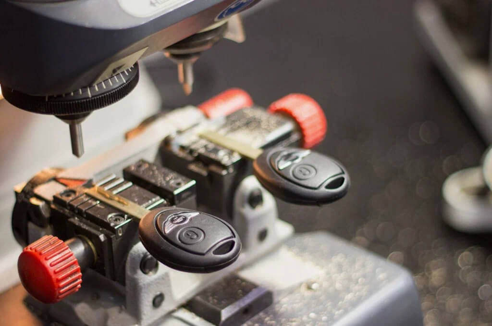

Нарізання леза автомобільного ключа в Ужгороді

Нарізаємо лезо автомобільного ключа на сучасному фрезерному верстаті точно за оригіналом, за замком запалювання або за VIN-кодом. Працюємо з усіма популярними профілями: HU66 (VAG), HU100 (Opel, Chevrolet), HU92 (BMW), HU101 (Ford), HU64 (Mercedes), TOY48 (Toyota), HY22 (Hyundai/Kia), VA2 (Renault, Dacia) та десятками інших. Виготовляємо як прості леза для механічних ключів, так і високоточні леза для викидних і smart-ключів.
Потрібно нарізати лезо?
За оригіналом — 15 хвилин. За замком — 1-2 години
3 способи нарізати лезо ключа
- За оригіналом. Найшвидший і найточніший спосіб — фрезеруємо нове лезо за робочим зразком. Час 15 хвилин, ціна від 400 грн.
- За замком. Якщо оригіналу немає — розбираємо замок дверей або запалювання, читаємо положення штифтів спеціальним інструментом і за цими даними нарізаємо лезо. Час 1-2 години, від 800 грн.
- За VIN-кодом. Для європейських марок (Audi, BMW, Mercedes, Volvo, Land Rover, Porsche) код леза прив'язаний до VIN. Через спеціальні бази або сервіси отримуємо код і нарізаємо лезо. Час 30-60 хвилин, від 600 грн.
Ціни на нарізання леза
| Послуга | Ціна | Час |
|---|---|---|
| Нарізання за оригіналом (простий профіль) | від 400 грн | 15 хв |
| Нарізання за оригіналом (HU66, HU100 — складний профіль) | від 500 грн | 20 хв |
| Нарізання за оригіналом для викидного ключа | від 600 грн | 20 хв |
| Нарізання за замком (з розбиранням замка дверей) | від 800 грн | 1 год |
| Нарізання за замком запалювання (зі зняттям) | від 1200 грн | 1-2 год |
| Нарізання за VIN-кодом (Audi, BMW, Mercedes) | від 600 грн | 30-60 хв |
| Підгонка готового леза до замка (доводка) | від 250 грн | 15 хв |
* Заготовка леза оплачується окремо — від 100 до 500 грн залежно від профілю.
З якими профілями працюємо
- HU66 — VW, Audi, Skoda, Seat, Porsche, Bentley (більшість моделей з 1998)
- HU100 — Opel, Chevrolet, Saab, Daewoo
- HU100R — Opel Astra J, Insignia, Mokka
- HU92, HU92R — BMW, Mini, Land Rover, Rolls-Royce
- HU64 — Mercedes-Benz (більшість)
- HU101 — Ford Focus, Mondeo, Kuga (з 2008)
- SIP22 — Fiat, Iveco, Lancia, Alfa Romeo
- TOY48, TOY43, TOY40 — Toyota, Lexus, Subaru
- HY22, KIA-09 — Hyundai, Kia
- HON66, HON58R — Honda, Acura
- MAZ24 — Mazda
- NSN14, DAT17 — Nissan, Infiniti, Datsun
- VA2, VA6 — Renault, Dacia, Peugeot, Citroen
- MIT11, MIT8 — Mitsubishi
- HU87, SZ22 — Suzuki
- Багато інших — уточнюйте по телефону
Чим точніше нарізане лезо тим довше прослужить замок
Кустарне нарізання «вручну» дає лезо з відхиленням 0,1-0,3 мм. Здається мало — але через 3-5 років користування таким ключем штифти замка зношуються нерівно, і одного дня замок просто не відкриється. Наш фрезерний верстат працює з точністю ±0,02 мм — це точніше за заводський стандарт. Тому наш ключ «лягає» в замок ідеально, і замок прослужить вам ще 10-15 років.
Часті запитання
Чи можна нарізати лезо за замком якщо немає оригіналу?
Так. Розбираємо замок дверей або запалювання, зчитуємо положення штифтів і фрезеруємо лезо. Робота займає 1-2 години залежно від замка.
Чи можна нарізати лезо за VIN?
Так, для Audi (HU66), Mercedes (HU64), BMW (HU92), Volvo (NE66), Land Rover та деяких інших — за VIN можна отримати код леза. Для японських марок (Toyota, Honda, Mazda) — часто ні, потрібен оригінал або замок.
Скільки коштує нарізати лезо?
За оригіналом — від 400 грн, час 15 хвилин. За замком (з розбиранням) — від 800 грн, час 1-2 години. За VIN-кодом (онлайн пошук + фрезерування) — від 600 грн.
Чи нарізаєте лезо для smart-ключа?
Так. У більшості smart-ключів є аварійне лезо всередині — його теж нарізаємо за тими ж принципами. Деякі smart-ключі (Mercedes EZS, BMW G-серія) аварійного леза не мають взагалі.
Потрібне нарізане лезо?
Зателефонуйте — підкажемо який спосіб найкращий для вас